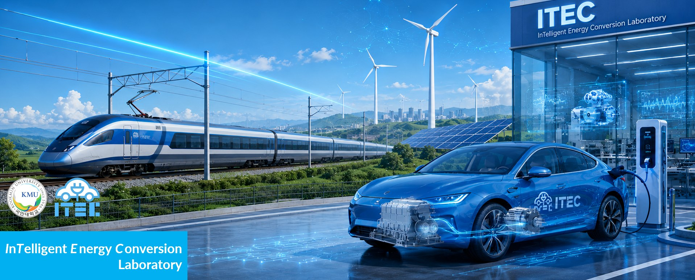

Electric Mobility
Electric propulsion and drive systems for road and rail vehicles.
Kookmin University
Power electronics and motor drives for electric mobility and energy systems.

Led by Professor Yongsu Han at Kookmin University, ITEC Lab develops power converters and electric motor control for applications including electric vehicles and railway traction. We also study monitoring and estimation methods for energy systems.
Meet the teamElectric propulsion and drive systems for road and rail vehicles.
Control algorithms and software for induction and permanent magnet motor drives.
Power converter topologies, modulation strategies, and control.
Monitoring techniques for power systems and temperature estimation for motors and inverters.
J. Choi, Y. Chae, D. Yu, M. Kim and Y. Han.
ICEMS 2025
B. Park, G. Lim, Y. Han and J. Ha*
IEEE Transactions on Industrial Electronics
K. Lee and Y. Han*
IEEE Transactions on Power Electronics